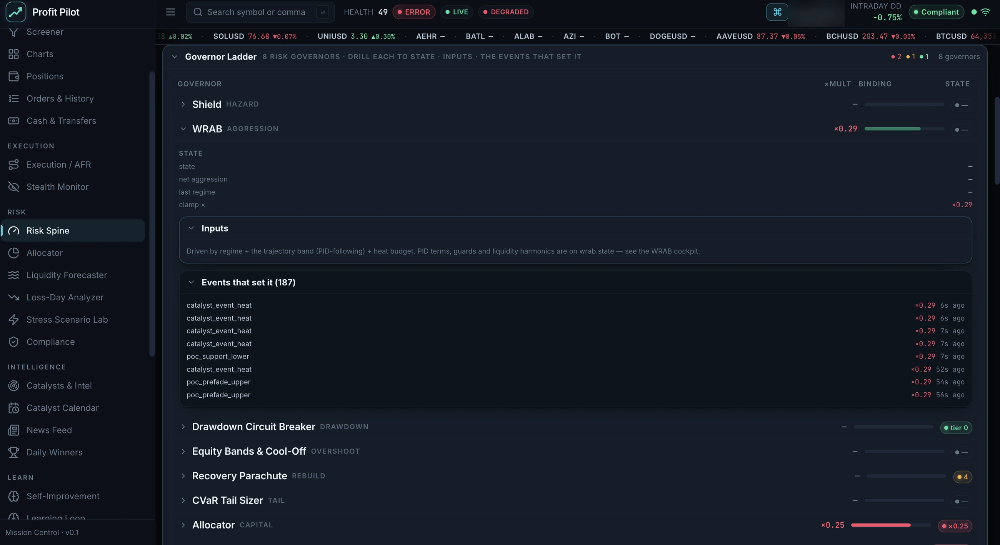
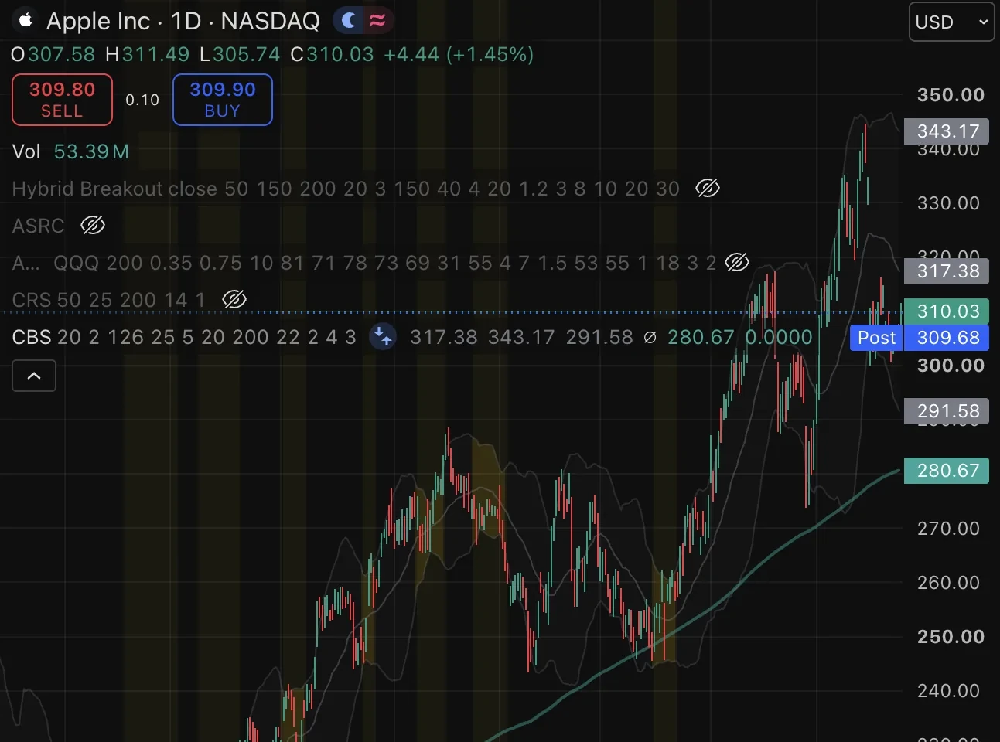
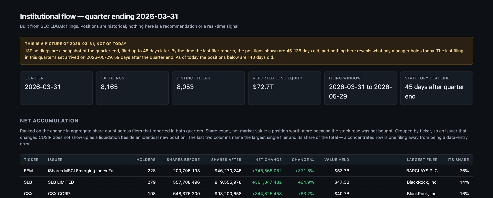

Mateo Sandoval
Finance and Economics at Gonzaga University, minors in Management Information Systems and Business Analytics. Quantitative trading systems, and the infrastructure built to test them.
Profit Pilot
Thirty-nine modules on a deterministic event bus, an eight-governor risk spine that no signal can bypass, six strategy sleeves competing for capital, and a research loop that proposes and gates its own parameter changes. Deployed and running continuously against live market data.

Systematic strategies
Four trading systems, each targeting a different return source: volatility-targeted trend, compression breakout, channel reversion, and a regime-scored swing model. Three are published as open-source scripts on TradingView, so the code is readable and every result is reproducible in the Strategy Tester. The experiments that failed are published alongside the ones that worked.

EDGAR institutional flow
Reads institutional filings from SEC EDGAR and reconstructs position flow: which filers accumulated or distributed a security, at what scale relative to their book, over which quarter. It separates 13F holdings, filed up to 45 days after quarter end, from Form 4 insider transactions, filed within two business days, and states on every view how stale the data it is showing actually is. A calibration study tests whether any of it predicts returns; under inference clustered by quarter the answer is no detectable effect, and that is the published result.
